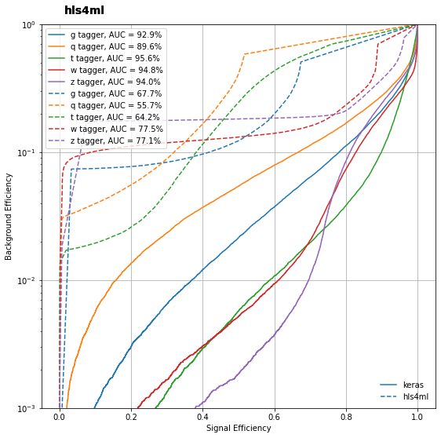
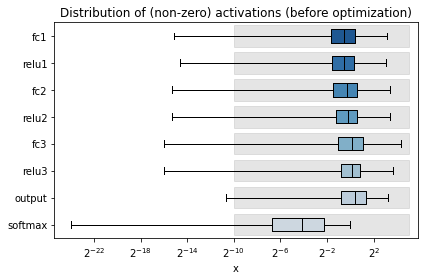
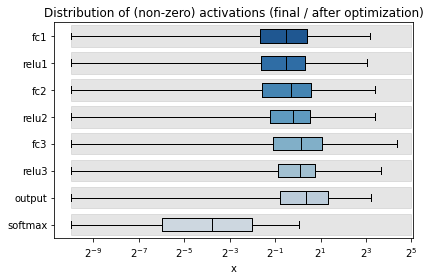
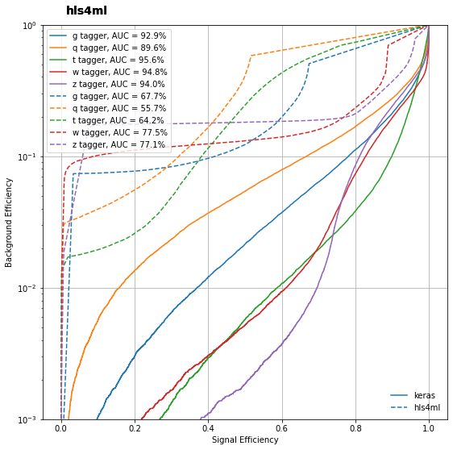
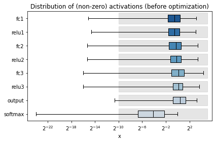
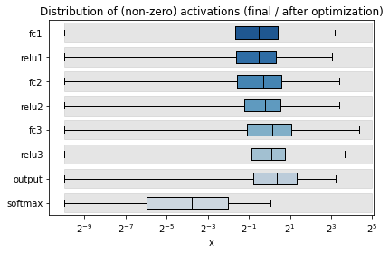

Advanced hls4ml Configuration
Contents
Advanced hls4ml Configuration#
from tensorflow.keras.utils import to_categorical
from sklearn.datasets import fetch_openml
from sklearn.model_selection import train_test_split
from sklearn.preprocessing import LabelEncoder, StandardScaler
from sklearn.metrics import accuracy_score
import numpy as np
import matplotlib.pyplot as plt
%matplotlib inline
import plotting
#import os
#os.environ['PATH'] = '/opt/Xilinx/Vivado/2019.2/bin:' + os.environ['PATH']
# for this tutorial we wont be actually running Vivado, so I have commented these lines out
# but if you want to look into actually running on an FPGA then simply uncomment these lines
---------------------------------------------------------------------------
ModuleNotFoundError Traceback (most recent call last)
/tmp/ipykernel_4799/1471126614.py in <module>
----> 1 from tensorflow.keras.utils import to_categorical
2 from sklearn.datasets import fetch_openml
3 from sklearn.model_selection import train_test_split
4 from sklearn.preprocessing import LabelEncoder, StandardScaler
5 from sklearn.metrics import accuracy_score
ModuleNotFoundError: No module named 'tensorflow'
Load the dataset#
X_train_val = np.load('X_train_val.npy')
X_test = np.ascontiguousarray(np.load('X_test.npy'))
y_train_val = np.load('y_train_val.npy')
y_test = np.load('y_test.npy', allow_pickle=True)
classes = np.load('classes.npy', allow_pickle=True)
Load the model#
Load the model trained in ‘part1_getting_started’. Make sure you’ve run through that walkthrough first!
from tensorflow.keras.models import load_model
model = load_model('model_1/KERAS_check_best_model.h5')
y_keras = model.predict(X_test)
2022-07-21 17:18:59.059962: I tensorflow/core/platform/cpu_feature_guard.cc:193] This TensorFlow binary is optimized with oneAPI Deep Neural Network Library (oneDNN) to use the following CPU instructions in performance-critical operations: SSE4.1 SSE4.2 AVX AVX2 FMA
To enable them in other operations, rebuild TensorFlow with the appropriate compiler flags.
5188/5188 [==============================] - 3s 607us/step
Make an hls4ml config & model#
This time, we’ll create a config with finer granularity. When we print the config dictionary, you’ll notice that an entry is created for each named Layer of the model. See for the first layer, for example:
fc1:
Precision:
weight: ap_fixed<16,6>
bias: ap_fixed<16,6>
result: ap_fixed<16,6>
ReuseFactor: 1
Taken ‘out of the box’ this config will set all the parameters to the same settings as in part 1, but we can use it as a template to start modifying things.
import hls4ml
config = hls4ml.utils.config_from_keras_model(model, granularity='name')
print("-----------------------------------")
plotting.print_dict(config)
print("-----------------------------------")
Interpreting Sequential
Topology:
Layer name: fc1_input, layer type: Input
Layer name: fc1, layer type: Dense
-> Activation (linear), layer name: fc1
Layer name: relu1, layer type: Activation
Layer name: fc2, layer type: Dense
-> Activation (linear), layer name: fc2
Layer name: relu2, layer type: Activation
Layer name: fc3, layer type: Dense
-> Activation (linear), layer name: fc3
Layer name: relu3, layer type: Activation
Layer name: output, layer type: Dense
-> Activation (linear), layer name: output
Layer name: softmax, layer type: Activation
-----------------------------------
Model
Precision: ap_fixed<16,6>
ReuseFactor: 1
Strategy: Latency
LayerName
fc1_input
Precision
result: ap_fixed<16,6>
fc1
Precision
weight: ap_fixed<16,6>
bias: ap_fixed<16,6>
result: ap_fixed<16,6>
ReuseFactor: 1
fc1_linear
Precision: ap_fixed<16,6>
ReuseFactor: 1
table_size: 1024
table_t: ap_fixed<18,8>
relu1
Precision: ap_fixed<16,6>
ReuseFactor: 1
table_size: 1024
table_t: ap_fixed<18,8>
fc2
Precision
weight: ap_fixed<16,6>
bias: ap_fixed<16,6>
result: ap_fixed<16,6>
ReuseFactor: 1
fc2_linear
Precision: ap_fixed<16,6>
ReuseFactor: 1
table_size: 1024
table_t: ap_fixed<18,8>
relu2
Precision: ap_fixed<16,6>
ReuseFactor: 1
table_size: 1024
table_t: ap_fixed<18,8>
fc3
Precision
weight: ap_fixed<16,6>
bias: ap_fixed<16,6>
result: ap_fixed<16,6>
ReuseFactor: 1
fc3_linear
Precision: ap_fixed<16,6>
ReuseFactor: 1
table_size: 1024
table_t: ap_fixed<18,8>
relu3
Precision: ap_fixed<16,6>
ReuseFactor: 1
table_size: 1024
table_t: ap_fixed<18,8>
output
Precision
weight: ap_fixed<16,6>
bias: ap_fixed<16,6>
result: ap_fixed<16,6>
ReuseFactor: 1
output_linear
Precision: ap_fixed<16,6>
ReuseFactor: 1
table_size: 1024
table_t: ap_fixed<18,8>
softmax
Precision: ap_fixed<16,6>
ReuseFactor: 1
table_size: 1024
exp_table_t: ap_fixed<18,8,AP_RND,AP_SAT>
inv_table_t: ap_fixed<18,8,AP_RND,AP_SAT>
-----------------------------------
Profiling#
As you can see, we can choose the precision of everything in our Neural Network. This is a powerful way to tune the performance, but it’s also complicated. The tools in hls4ml.model.profiling can help you choose the right precision for your model. (That said, training your model with quantization built in can get around this problem, and that is introduced in Part 4. So, don’t go too far down the rabbit hole of tuning your data types without first trying out quantization aware training with QKeras.)
The first thing to try is to numerically profile your model. This method plots the distribution of the weights (and biases) as a box and whisker plot. The grey boxes show the values which can be represented with the data types used in the hls_model. Generally, you need the box to overlap completely with the whisker ‘to the right’ (large values) otherwise you’ll get saturation & wrap-around issues. It can be okay for the box not to overlap completely ‘to the left’ (small values), but finding how small you can go is a matter of trial-and-error.
Providing data, in this case just using the first 1000 examples for speed, will show the same distributions captured at the output of each layer.
%matplotlib inline
for layer in config['LayerName'].keys():
config['LayerName'][layer]['Trace'] = True
hls_model = hls4ml.converters.convert_from_keras_model(model,
hls_config=config,
output_dir='model_1/hls4ml_prj_2',
part='xcu250-figd2104-2L-e')
hls4ml.model.profiling.numerical(model=model, hls_model=hls_model, X=X_test[:1000])
Interpreting Sequential
Topology:
Layer name: fc1_input, layer type: InputLayer, input shapes: [[None, 16]], output shape: [None, 16]
Layer name: fc1, layer type: Dense, input shapes: [[None, 16]], output shape: [None, 64]
Layer name: relu1, layer type: Activation, input shapes: [[None, 64]], output shape: [None, 64]
Layer name: fc2, layer type: Dense, input shapes: [[None, 64]], output shape: [None, 32]
Layer name: relu2, layer type: Activation, input shapes: [[None, 32]], output shape: [None, 32]
Layer name: fc3, layer type: Dense, input shapes: [[None, 32]], output shape: [None, 32]
Layer name: relu3, layer type: Activation, input shapes: [[None, 32]], output shape: [None, 32]
Layer name: output, layer type: Dense, input shapes: [[None, 32]], output shape: [None, 5]
Layer name: softmax, layer type: Softmax, input shapes: [[None, 5]], output shape: [None, 5]
Creating HLS model
Interpreting Sequential
Topology:
Layer name: fc1_input, layer type: InputLayer, input shapes: [[None, 16]], output shape: [None, 16]
Layer name: fc1, layer type: Dense, input shapes: [[None, 16]], output shape: [None, 64]
Layer name: relu1, layer type: Activation, input shapes: [[None, 64]], output shape: [None, 64]
Layer name: fc2, layer type: Dense, input shapes: [[None, 64]], output shape: [None, 32]
Layer name: relu2, layer type: Activation, input shapes: [[None, 32]], output shape: [None, 32]
Layer name: fc3, layer type: Dense, input shapes: [[None, 32]], output shape: [None, 32]
Layer name: relu3, layer type: Activation, input shapes: [[None, 32]], output shape: [None, 32]
Layer name: output, layer type: Dense, input shapes: [[None, 32]], output shape: [None, 5]
Layer name: softmax, layer type: Softmax, input shapes: [[None, 5]], output shape: [None, 5]
Creating HLS model
Profiling weights (before optimization)
Profiling weights (final / after optimization)
Profiling activations (before optimization)
fc1
32/32 [==============================] - 0s 860us/step
relu1
32/32 [==============================] - 0s 836us/step
fc2
32/32 [==============================] - 0s 829us/step
relu2
32/32 [==============================] - 0s 819us/step
fc3
32/32 [==============================] - 0s 791us/step
relu3
32/32 [==============================] - 0s 796us/step
output
32/32 [==============================] - 0s 854us/step
softmax
32/32 [==============================] - 0s 897us/step
Profiling activations (final / after optimization)
Recompiling myproject with tracing
Writing HLS project
Done
fc1
relu1
fc2
relu2
fc3
relu3
output
softmax
(<Figure size 432x288 with 1 Axes>,
<Figure size 432x288 with 1 Axes>,
<Figure size 432x288 with 1 Axes>,
<Figure size 432x288 with 1 Axes>)
 





Customize#
Let’s just try setting the precision of the first layer weights to something more narrow than 16 bits. Using fewer bits can save resources in the FPGA. After inspecting the profiling plot above, let’s try 8 bits with 1 integer bit.
Then create a new HLSModel, and display the profiling with the new config. This time, just display the weight profile by not providing any data ‘X’. Then create the HLSModel and display the architecture. Notice the box around the weights of the first layer reflects the different precision.
config['LayerName']['fc1']['Precision']['weight'] = 'ap_fixed<8,2>'
hls_model = hls4ml.converters.convert_from_keras_model(model,
hls_config=config,
output_dir='model_1/hls4ml_prj_2',
part='xcu250-figd2104-2L-e')
hls4ml.model.profiling.numerical(model=model, hls_model=hls_model)
hls4ml.utils.plot_model(hls_model, show_shapes=True, show_precision=True, to_file=None)
Interpreting Sequential
Topology:
Layer name: fc1_input, layer type: InputLayer, input shapes: [[None, 16]], output shape: [None, 16]
Layer name: fc1, layer type: Dense, input shapes: [[None, 16]], output shape: [None, 64]
Layer name: relu1, layer type: Activation, input shapes: [[None, 64]], output shape: [None, 64]
Layer name: fc2, layer type: Dense, input shapes: [[None, 64]], output shape: [None, 32]
Layer name: relu2, layer type: Activation, input shapes: [[None, 32]], output shape: [None, 32]
Layer name: fc3, layer type: Dense, input shapes: [[None, 32]], output shape: [None, 32]
Layer name: relu3, layer type: Activation, input shapes: [[None, 32]], output shape: [None, 32]
Layer name: output, layer type: Dense, input shapes: [[None, 32]], output shape: [None, 5]
Layer name: softmax, layer type: Softmax, input shapes: [[None, 5]], output shape: [None, 5]
Creating HLS model
Interpreting Sequential
Topology:
Layer name: fc1_input, layer type: InputLayer, input shapes: [[None, 16]], output shape: [None, 16]
Layer name: fc1, layer type: Dense, input shapes: [[None, 16]], output shape: [None, 64]
Layer name: relu1, layer type: Activation, input shapes: [[None, 64]], output shape: [None, 64]
Layer name: fc2, layer type: Dense, input shapes: [[None, 64]], output shape: [None, 32]
Layer name: relu2, layer type: Activation, input shapes: [[None, 32]], output shape: [None, 32]
Layer name: fc3, layer type: Dense, input shapes: [[None, 32]], output shape: [None, 32]
Layer name: relu3, layer type: Activation, input shapes: [[None, 32]], output shape: [None, 32]
Layer name: output, layer type: Dense, input shapes: [[None, 32]], output shape: [None, 5]
Layer name: softmax, layer type: Softmax, input shapes: [[None, 5]], output shape: [None, 5]
Creating HLS model
Profiling weights (before optimization)
Profiling weights (final / after optimization)
Trace#
When we start using customised precision throughout the model, it can be useful to collect the output from each layer to find out when things have gone wrong. We enable this trace collection by setting Trace = True for each layer whose output we want to collect.
for layer in config['LayerName'].keys():
config['LayerName'][layer]['Trace'] = True
hls_model = hls4ml.converters.convert_from_keras_model(model,
hls_config=config,
output_dir='model_1/hls4ml_prj_2',
part='xcu250-figd2104-2L-e')
Interpreting Sequential
Topology:
Layer name: fc1_input, layer type: InputLayer, input shapes: [[None, 16]], output shape: [None, 16]
Layer name: fc1, layer type: Dense, input shapes: [[None, 16]], output shape: [None, 64]
Layer name: relu1, layer type: Activation, input shapes: [[None, 64]], output shape: [None, 64]
Layer name: fc2, layer type: Dense, input shapes: [[None, 64]], output shape: [None, 32]
Layer name: relu2, layer type: Activation, input shapes: [[None, 32]], output shape: [None, 32]
Layer name: fc3, layer type: Dense, input shapes: [[None, 32]], output shape: [None, 32]
Layer name: relu3, layer type: Activation, input shapes: [[None, 32]], output shape: [None, 32]
Layer name: output, layer type: Dense, input shapes: [[None, 32]], output shape: [None, 5]
Layer name: softmax, layer type: Softmax, input shapes: [[None, 5]], output shape: [None, 5]
Creating HLS model
Compile, trace, predict#
Now we need to check that this model performance is still good after reducing the precision. We compile the hls_model, and now use the hls_model.trace method to collect the model output, and also the output for all the layers we enabled tracing for. This returns a dictionary with keys corresponding to the layer names of the model. Stored at that key is the array of values output by that layer, sampled from the provided data.
A helper function get_ymodel_keras will return the same dictionary for the Keras model.
We’ll just run the trace for the first 1000 examples, since it takes a bit longer and uses more memory than just running predict.
hls_model.compile()
hls4ml_pred, hls4ml_trace = hls_model.trace(X_test[:1000])
keras_trace = hls4ml.model.profiling.get_ymodel_keras(model, X_test[:1000])
y_hls = hls_model.predict(X_test)
Writing HLS project
Done
Recompiling myproject with tracing
Writing HLS project
Done
Processing fc1 in Keras model...
32/32 [==============================] - 0s 782us/step
32/32 [==============================] - 0s 793us/step
Processing relu1 in Keras model...
32/32 [==============================] - 0s 823us/step
Processing fc2 in Keras model...
32/32 [==============================] - 0s 918us/step
32/32 [==============================] - 0s 791us/step
Processing relu2 in Keras model...
32/32 [==============================] - 0s 792us/step
Processing fc3 in Keras model...
32/32 [==============================] - 0s 821us/step
32/32 [==============================] - 0s 788us/step
Processing relu3 in Keras model...
32/32 [==============================] - 0s 792us/step
Processing output in Keras model...
32/32 [==============================] - 0s 867us/step
32/32 [==============================] - 0s 781us/step
Processing softmax in Keras model...
32/32 [==============================] - 0s 832us/step
Done taking outputs for Keras model.
Inspect#
Now we can print out, make plots, or do any other more detailed analysis on the output of each layer to make sure we haven’t made the performance worse. And if we have, we can quickly find out where. Let’s just print the output of the first layer, for the first sample, for both the Keras and hls4ml models.
print("Keras layer 'fc1', first sample:")
print(keras_trace['fc1'][0])
print("hls4ml layer 'fc1', first sample:")
print(hls4ml_trace['fc1'][0])
Keras layer 'fc1', first sample:
[ 1.3306354 -0.22698954 -2.0343883 -1.2123613 0.73952144 1.3621746
2.6126215 2.128778 0.21299532 -1.0878989 0.05825138 -0.26530737
1.5060041 0.6178714 -0.70115817 0.7004882 0.23399553 0.4927037
0.67497385 0.79926014 1.0609269 0.43163615 0.5352965 -1.0793328
-1.112483 0.5785398 -0.5854138 -2.1454327 0.85714877 0.07073094
1.8505831 0.6400377 0.11940822 0.75741416 1.3578058 1.3383353
0.735686 -2.3539734 -0.4683197 -0.06403241 -0.3721081 0.18759231
-1.1884315 -0.792814 1.5173187 -1.5938551 1.3457724 1.9220556
-1.5913658 -1.7685407 0.5739652 -2.1313 -1.5485458 1.708481
1.2832036 0.55251515 -1.1861972 -1.4757591 0.84896934 0.92510796
-1.4988196 0.7204734 -1.2612395 -1.0851451 ]
hls4ml layer 'fc1', first sample:
[ 1.31738281 -0.23339844 -2.0625 -1.2421875 0.70605469 1.33300781
2.5546875 2.07421875 0.16308594 -1.125 0.03710938 -0.3046875
1.45703125 0.58105469 -0.75585938 0.65527344 0.20507812 0.43652344
0.61230469 0.75683594 1.0390625 0.38964844 0.50390625 -1.12011719
-1.1328125 0.52929688 -0.63671875 -2.16894531 0.83105469 0.03027344
1.80859375 0.61914062 0.08496094 0.71777344 1.33789062 1.34082031
0.70996094 -2.37988281 -0.5234375 -0.09179688 -0.39941406 0.1796875
-1.2265625 -0.81640625 1.47167969 -1.63671875 1.29589844 1.85742188
-1.62695312 -1.81640625 0.53710938 -2.17089844 -1.57910156 1.66503906
1.24414062 0.52929688 -1.23535156 -1.47265625 0.79394531 0.89355469
-1.54882812 0.67675781 -1.30273438 -1.12207031]
Compare#
Let’s see if we lost performance by using 8 bits for the weights of the first layer by inspecting the accuracy and ROC curve.
print("Keras Accuracy: {}".format(accuracy_score(np.argmax(y_test, axis=1), np.argmax(y_keras, axis=1))))
print("hls4ml Accuracy: {}".format(accuracy_score(np.argmax(y_test, axis=1), np.argmax(y_hls, axis=1))))
fig, ax = plt.subplots(figsize=(9, 9))
_ = plotting.makeRoc(y_test, y_keras, classes)
plt.gca().set_prop_cycle(None) # reset the colors
_ = plotting.makeRoc(y_test, y_hls, classes, linestyle='--')
from matplotlib.lines import Line2D
lines = [Line2D([0], [0], ls='-'),
Line2D([0], [0], ls='--')]
from matplotlib.legend import Legend
leg = Legend(ax, lines, labels=['keras', 'hls4ml'],
loc='lower right', frameon=False)
ax.add_artist(leg)
Keras Accuracy: 0.7502650602409638
hls4ml Accuracy: 0.7496927710843373
<matplotlib.legend.Legend at 0x1558f9970>

Profiling & Trace Summary#
We lost a small amount of accuracy compared to when we used ap_fixed<16,6>, but in many cases this difference will be small enough to be worth the resource saving. You can choose how aggressive to go with quantization, but it’s always sensible to make the profiling plots even with the default configuration. Layer-level trace is very useful for finding when you reduced the bitwidth too far, or when the default configuration is no good for your model.
With this ‘post training quantization’, around 8-bits width generally seems to be the limit to how low you can go before suffering significant performance loss. In Part 4, we’ll look at using ‘training aware quantization’ with QKeras to go much lower without losing much performance.
ReuseFactor#
Now let’s look at the other configuration parameter: ReuseFactor.
Recall that ReuseFactor is our mechanism for tuning the parallelism:

So now let’s make a new configuration for this model, and set the ReuseFactor to 2 for every layer:
we’ll compile the model, then evaulate its performance. (Note, by creating a new config with granularity=Model, we’re implicitly resetting the precision to ap_fixed<16,6> throughout.) Changing the ReuseFactor should not change the classification results, but let’s just verify that by inspecting the accuracy and ROC curve again!
Then we’ll build the model.
config = hls4ml.utils.config_from_keras_model(model, granularity='Model')
print("-----------------------------------")
print(config)
print("-----------------------------------")
# Set the ReuseFactor to 2 throughout
config['Model']['ReuseFactor'] = 2
hls_model = hls4ml.converters.convert_from_keras_model(model,
hls_config=config,
output_dir='model_1/hls4ml_prj_2',
part='xcu250-figd2104-2L-e')
hls_model.compile()
y_hls = hls_model.predict(X_test)
print("Keras Accuracy: {}".format(accuracy_score(np.argmax(y_test, axis=1), np.argmax(y_keras, axis=1))))
print("hls4ml Accuracy: {}".format(accuracy_score(np.argmax(y_test, axis=1), np.argmax(y_hls, axis=1))))
plt.figure(figsize=(9, 9))
_ = plotting.makeRoc(y_test, y_keras, classes)
plt.gca().set_prop_cycle(None) # reset the colors
_ = plotting.makeRoc(y_test, y_hls, classes, linestyle='--')
Interpreting Sequential
Topology:
Layer name: fc1_input, layer type: Input
Layer name: fc1, layer type: Dense
-> Activation (linear), layer name: fc1
Layer name: relu1, layer type: Activation
Layer name: fc2, layer type: Dense
-> Activation (linear), layer name: fc2
Layer name: relu2, layer type: Activation
Layer name: fc3, layer type: Dense
-> Activation (linear), layer name: fc3
Layer name: relu3, layer type: Activation
Layer name: output, layer type: Dense
-> Activation (linear), layer name: output
Layer name: softmax, layer type: Activation
-----------------------------------
{'Model': {'Precision': 'ap_fixed<16,6>', 'ReuseFactor': 1, 'Strategy': 'Latency'}}
-----------------------------------
Interpreting Sequential
Topology:
Layer name: fc1_input, layer type: InputLayer, input shapes: [[None, 16]], output shape: [None, 16]
Layer name: fc1, layer type: Dense, input shapes: [[None, 16]], output shape: [None, 64]
Layer name: relu1, layer type: Activation, input shapes: [[None, 64]], output shape: [None, 64]
Layer name: fc2, layer type: Dense, input shapes: [[None, 64]], output shape: [None, 32]
Layer name: relu2, layer type: Activation, input shapes: [[None, 32]], output shape: [None, 32]
Layer name: fc3, layer type: Dense, input shapes: [[None, 32]], output shape: [None, 32]
Layer name: relu3, layer type: Activation, input shapes: [[None, 32]], output shape: [None, 32]
Layer name: output, layer type: Dense, input shapes: [[None, 32]], output shape: [None, 5]
Layer name: softmax, layer type: Softmax, input shapes: [[None, 5]], output shape: [None, 5]
Creating HLS model
Writing HLS project
Done
Keras Accuracy: 0.7502650602409638
hls4ml Accuracy: 0.7504397590361446
Now build the model
This can take several minutes.
While the C-Synthesis is running, we can monitor the progress looking at the log file by opening a terminal from the notebook home, and executing:
tail -f model_1/hls4ml_prj_2/vivado_hls.log
hls_model.build(csim=False)
Project myproject_prj does not exist. Rerun "hls4ml build -p model_1/hls4ml_prj_2".
sh: vivado_hls: command not found
And now print the report, compare this to the report from Exercise 1
hls4ml.report.read_vivado_report('model_1/hls4ml_prj_2')
---------------------------------------------------------------------------
NotADirectoryError Traceback (most recent call last)
Input In [13], in <cell line: 1>()
----> 1 hls4ml.report.read_vivado_report('model_1/hls4ml_prj_2')
File ~/miniconda3/envs/ml-latest/lib/python3.8/site-packages/hls4ml/report/vivado_report.py:16, in read_vivado_report(hls_dir, full_report)
13 top_func_name = None
15 if os.path.isfile(hls_dir + '/build_prj.tcl'):
---> 16 prj_dir, top_func_name = _parse_build_script(hls_dir + '/build_prj.tcl')
18 if prj_dir is None or top_func_name is None:
19 print('Unable to read project data. Exiting.')
File ~/miniconda3/envs/ml-latest/lib/python3.8/site-packages/hls4ml/report/vivado_report.py:40, in _parse_build_script(path)
38 build_path = path + '/build_prj.tcl'
39 project_path = path + '/project.tcl'
---> 40 with open(build_path, 'r') as f:
41 for line in f.readlines():
42 if 'set_top' in line:
NotADirectoryError: [Errno 20] Not a directory: 'model_1/hls4ml_prj_2/build_prj.tcl/build_prj.tcl'
hls4ml.report.read_vivado_report('model_1/hls4ml_prj')
Exercise#
Recall the outcome of the exercise of part 1 where we estimated how many DSPs our network should use. How does this change now we’ve used
ReuseFactor = 2for the network? Does the expectation match the report this time?